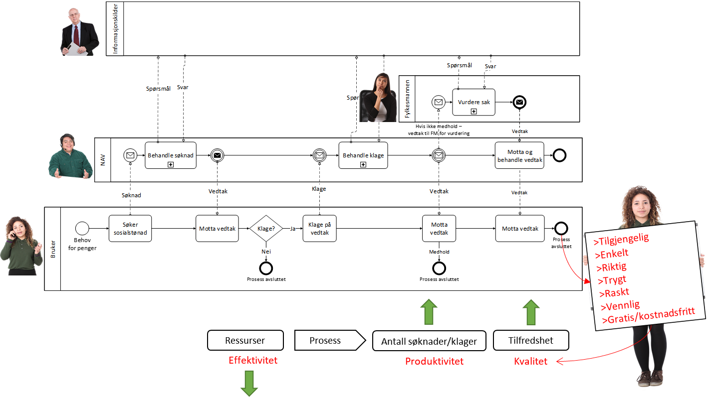
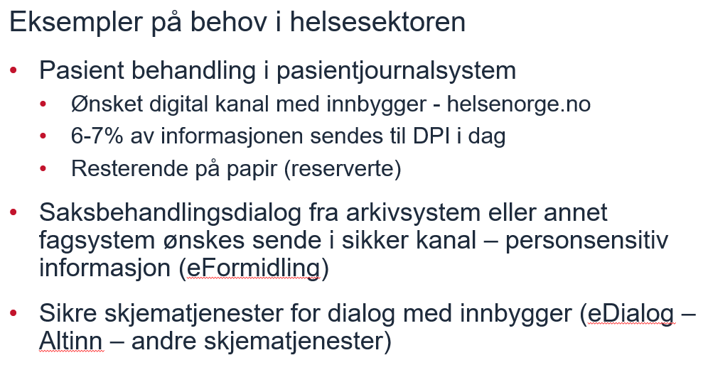
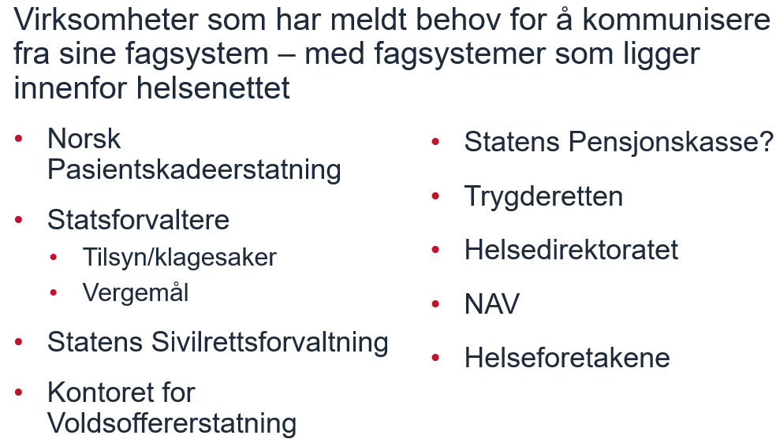
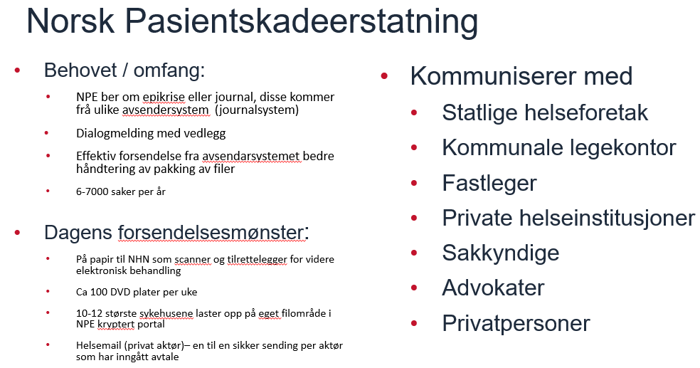
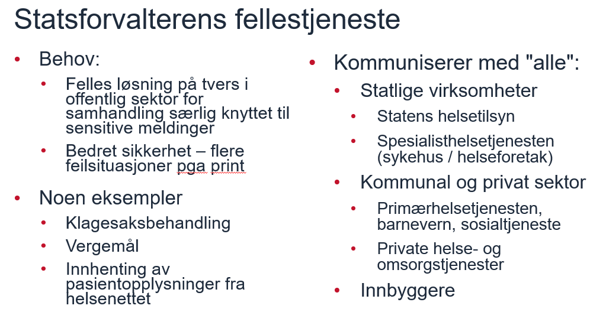

Grunnleggende behovsanalyse
1. Juridisk
Det behøves definisjon av
-
Roller og ansvar
-
Avtaleverk for samhandlingsavtaler
Det finnes mye gjort og tenkt på dette; se nærmere beskrivelser under kapitlene om nåsituasjon og ønsket situasjon/målbilder.
2. Organisatorisk (forretning)
2.1. Forretningsmessige brukstilfeller
Foreløpig liste (lett blanding):
-
Trigge neste ledd i forhåndsfastlagt samhandlingsprosess .
-
Digital post til innbygger
-
Digital post mellom virksomheter
-
Innhenting av datagrunnlag for ledd i tverrgående samhandlingsprosess
-
Innhenting av datagrunnlag for dataanalyse
-
Notifikasjon (publisering) om vedtak i offentlig saksbehandling
-
Notifikasjon (publisering) om endret datasett (master); for oppdatering av avledete datasett (slaver)
-
Innsending av måledata (iOT) og Innsamling av innsendte måledata (iOT)
-
Overføring av data til langtidslagring
-
Innrapportering til sentral instans, f.eks. til Altinn (fra mange til en, men hver enkelt innrapportering er fra en avsender til en kjent mottaker)
-
Innsending av søknad om tjeneste fra en person til en statlig etat
-
Innsending av søknad om tjeneste fra en person til en kommunal etat
-
Innsending av søknad om tjeneste fra en virksomhet til en statlig etat
-
Innsending av søknad om tjeneste fra en virksomhet til en kommunal etat
-
Søknad om tjeneste fra en person til en offentlig instans (ikke bare innsending, men et forløp
-
…
2.2. Forretningsmessige behov
-
Kunne adressere organsiasjonsenhet i virksomhet
-
Kunne adressere person / rolle
-
Kunne skjerme meldinger, dvs. sende meldinger sikkert (konfensialitet, intgeritet, ikke-benektelse)
-
Kunne manuelt videresende uåpnet konolutt (sekretæren) , metadata
2.3. Casebasert analyse
Svare på melding i digital postkasse (DPI): Klikke på lenke i meldingen som gir skjema på NAVs hjemmesider

Et utvalg av cases er listet i vedlegg X. Her ser vi nærmere på noen av disse.




2.4. Brukerhistorier
TBD.
4. Teknisk
TBD.